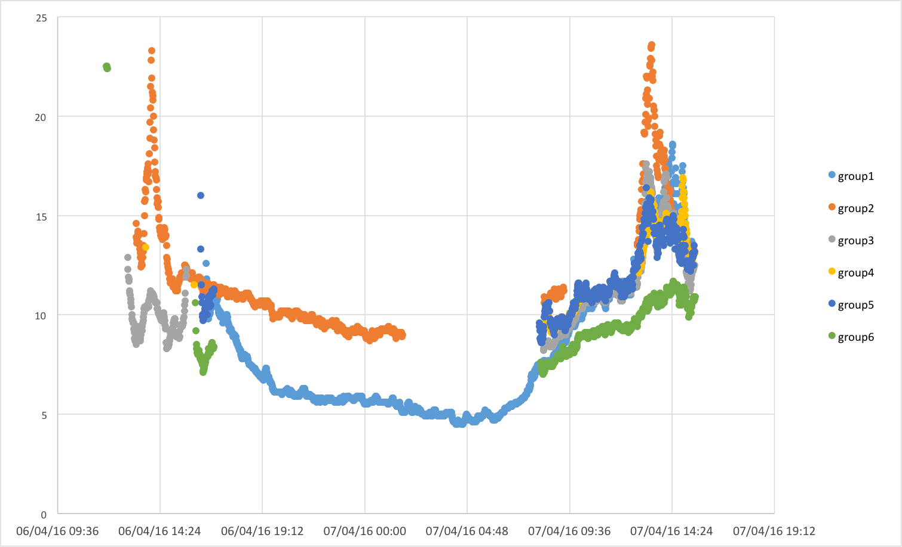

Data Analysis
In this exercise we will log in to the website to which we have
streamed the data, retrieve the data and start analysing it.
Go to one of the web pages below, and click 'sign
in'. Use the
following details to sign in:
- User ID: exetergenius
- Password: universityofexeter
Click on Channels then My Channels, then you will be faced with a list
of the web pages on which the data is stored. Click on the Public tab for each of the groups, and you will
see the full dataset that has been collected - note that it might not
look quite like you were expecting.
Start thinking about the data, asking yourself questions like:
What are the differences between the
average values at each site?
How has each site responded to the
day-night cycle, are there any striking differences?
Is each dataset complete? If not, what
does this tell you about the nature of collecting real-world data?
Does the data vary smoothly through
time, or are there any 'spikes'? What might explain these?
Can you relate any of the differences
or
features you have thought about in the above to the different
locations/environments that each sensor was deployed in?
Now click on the Data Import/Export
tab, then below the heading Export, click Download. Repeat this for each of the web pages,
so that you have the data from each group.
Next open this data up in Microsoft Excel, and copy the data from
each group into a single spreadsheet.
You will see tht Excel does not initially recognise the time
information at time, thsi is beacsue it contains the text UTC. To get rid of this unwanted text, do a find and replace finding UTC
(with a
space in front of it) and replacing this with and empty field - i.e. with nothing
Now try and produce a chart that contains each of the timeseries on
a single plot
Hint: first produce an empty scatter
plot (NOT a line graph), then add each dataset one by one, making sure
that the time infromation is on the x-axis, and temperature data is on
the y-axis.
Now look back at the questons above - can you improve on yoru
answers now that you see all of the data together?
2016 Results!
Well done everyone, you've collected some really exciting data! Below
you will find a copy of the summary plot showing the temperatures
records compiled from each of the sites:

Optional
Homework Exercise
The
aim of the exercises so far has
been to show you what
computers
can do when you are happy to 'hack' them about, and make you think
about the process of collecting data plays within scientific research.
What we have not done is really dig in to the computer code behind all
of this (although you have seen it, and made a simple edit).
An
optional homework exercise, allows
you to start learning
about
basic
computer coding (if this is something new to you). You can do this
using a program called 'Scratch':

https://scratch.mit.edu/projects/editor/).
The
exercises we want you to work
through can be found here
http://scratched.gse.harvard.edu/resources/22-scratch-worksheets/p>
The
material in these is perhaps a
little patronising in
places,
but
it starts from the very basics, so are a fantastic resource.
Once
you have completed all of these
(and don't worry if there
are
a
few steps that don't make sense - if you are confused, just have a
really careful thing, then move on to the next step), take a look at
the script that we gave you to measure temperature data and upload this
to the web '
generating_genius.py' You can view
or download this here
http://people.exeter.ac.uk/ph290/ftp/generating_genius.py.
Now
lots that is going on in this
script will not make much
sense,
but try your very best to work out what is foing on in each step - can
you see any features that look like what you saw when using Scratch -
perhaps loops and variables? Now try and write down in a list of bullet
points what you think the program is doing at each stage,